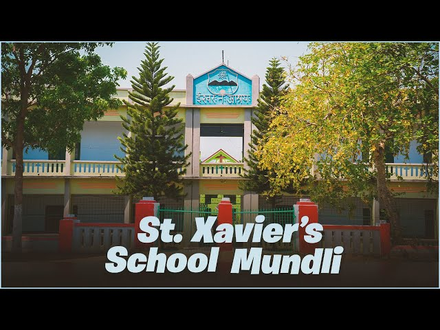
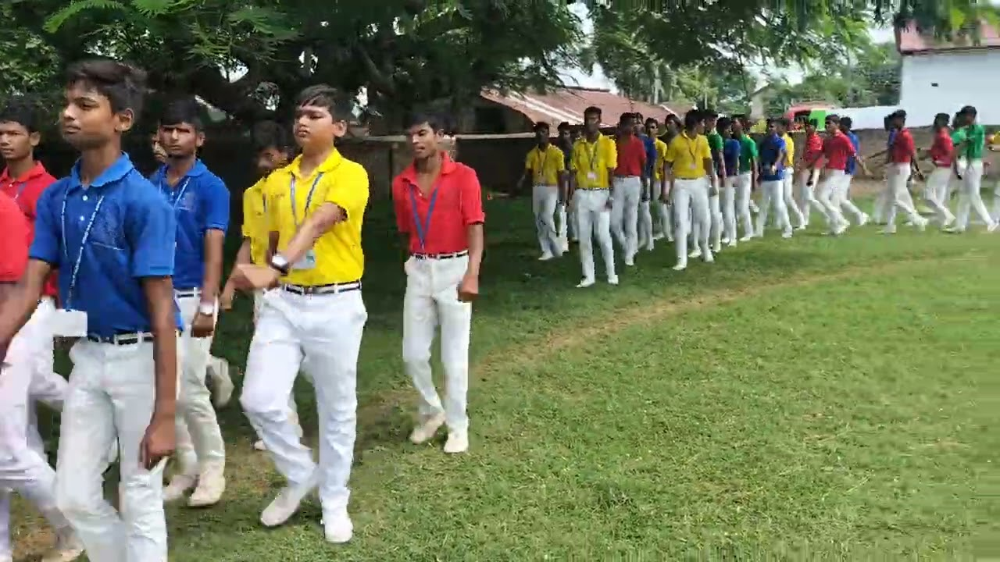
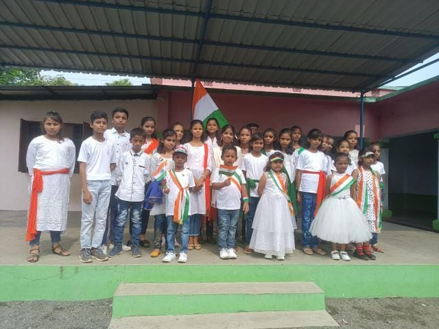

<!DOCTYPE html>
<html lang="en">
<head>
    <meta charset="UTF-8">
    <meta name="viewport" content="width=device-width, initial-scale=1.0">
    <title>St. Xavier's School Tinpahar Mundli</title>
    <style>
        body {
            font-family: Arial, sans-serif;
            margin: 0;
            padding: 0;
            background-color: #f4f4f4;
            animation: fadeIn 1s ease-in;
        }

   

            #header {
            text-align: center;
            padding: 30px;
            background-color: #4CAF50; 
            color: white;  
            font-family: 'Segoe UI', Tahoma, Geneva, Verdana, sans-serif;
}

        

h1 {
    margin: 0;
}

nav {
    margin-top: 10px;
}

nav ul {
    list-style-type: none;
    padding: 0;
}

nav ul li {
    display: inline;
    margin: 0 15px;
}

nav ul li a {
    color: white;
    text-decoration: none;
    transition: color 0.3s;
}

nav ul li a:hover {
    color: #dfffd9; 
}

section {
    padding: 40px;
    margin: 20px auto;
    background: white;
    border-radius: 8px;
    box-shadow: 0 2px 10px rgba(0, 0, 0, 0.1);
    max-width: 800px;
    animation: slideIn 0.5s ease;
}

h2 {
    color: #4CAF50;
    border-bottom: 2px solid #4CAF50;
    padding-bottom: 10px;
    margin: 0;
}

footer {
    background-color: #333;
    color: white;
    text-align: center;
    padding: 15px 0;
    position: relative;
    bottom: 0;
    width: 100%;
}

button {
    padding: 10px 15px;
    background-color: #4CAF50;
    color: white;
    border: none;
    border-radius: 5px;
    cursor: pointer;
    transition: background-color 0.3s;
}

button:hover {
    background-color: #45a049; 
}

.about-container {
    display: flex;
    flex-direction: column; 
    align-items: center; 
}

.events-container, .activities-container, .gallery-container {
    display: flex;
    flex-wrap: wrap;
    justify-content: space-around;
    margin: 20px 0;
}

.event, .activity, .gallery-item {
    margin: 10px;
    text-align: center;
    transition: transform 0.3s;
    width: 200px;
}

.event:hover, .activity:hover, .gallery-item:hover {
    transform: scale(1.05);
}

.event img, .activity img, .gallery-item img {
    width: 200px;
    height: 200px;
    border-radius: 8px;
    display: block;
    margin: 0 auto;
}

#contact ul {
    list-style-type: none;
    padding: 0;
}

#contact ul li {
    margin: 5px 0;
}

#mamchange {
    color: aliceblue;
    text-decoration: underline; 
}

        input[type="radio"] {
            margin-right: 10px;
        }

        button {
            padding: 10px 20px;
            background-color: #ffffff;
            color: #000000;
            border: 1px solid #000000;
            border-radius: 5px;
            cursor: pointer;
            font-size: 1.1em;
        }

        button:hover {
            background-color: #eeeeee;
        }

        #mail {
            color: white;
            text-decoration: underline;
            text-align: left;
        }

        body {
            font-family: Arial, sans-serif;
            margin: 0;
            padding: 0;
            background-color: #f9f9f9;
        }

        header {
            text-align: center;
            padding: 30px;
            background-color: #ffffff;
            color: #000000;
        }

        form {
            max-width: 600px;
            margin: 20px auto;
            padding: 20px;
            background-color: #ffffff;
            border-radius: 8px;
            box-shadow: 0 0 10px rgba(0, 0, 0, 0.1);
        }

        .question {
            margin-bottom: 20px;
        }
       
.header-content {
  display: flex;
  align-items: center; 
  justify-content: center; 
  
}

/* Styling the logo */
.school-logo {
  width: 100px; /* Adjust size as needed */
  height: 100px;
  margin-left: 15px; /* Space between the text and logo */
}

#nav-menu {
  list-style-type: none;
  padding: 0;
  display: flex;
  justify-content: center;
  margin-top: 20px;
  
}

#nav-menu li {
  margin: 0 10px;
  
}

#nav-menu a {
  text-decoration: none;
  color: black;
  
}

       


        label {
            font-size: 1.2em;
            display: block;
            margin-bottom: 10px;
        }
        #result {
            margin-top: 20px;
            text-align: center;
        }

        .feedback {
            font-size: 1.2em;
        }
        #background-animation {
        position: fixed;
      top: 0;
       left: 0;
      width: 100%;
     height: 100%;
     z-index: -1; /* Keep it behind all content */
     overflow: hidden;
    background: #fff; /* White background */
}

/* SVG Animation */
#red {
  fill: none;
  opacity: 0.15;
  stroke: #CE1B5F;
  stroke-width: 12;
  stroke-miterlimit: 10;
  animation: moveLeft 6s infinite ease-in-out, scaleUp 8s infinite ease-in-out, rotateRed 8s infinite linear;
}

#blue {
  fill: none;
  opacity: 0.15;
  stroke: #06A1C4;
  stroke-width: 12;
  stroke-miterlimit: 10;
  animation: moveRight 6s infinite ease-in-out, scaleDown 8s infinite ease-in-out, rotateBlue 8s infinite linear;
}

#light-blue {
  fill: none;
  opacity: 0.15;
  stroke: #06A1C4;
  stroke-width: 6;
  stroke-miterlimit: 10;
  stroke-dasharray: 200;
  stroke-dashoffset: 800;
  animation: draw 4s infinite ease-in-out, pulseLightBlue 6s infinite ease-in-out;
}

/* Animations */
@keyframes draw {
  to {
    stroke-dashoffset: 0;
  }
}

@keyframes moveLeft {
  0% {
    transform: translateX(-200px);
    opacity: 0.15;
  }
  50% {
    transform: translateX(0);
    opacity: 0.6;
  }
  100% {
    transform: translateX(-200px);
    opacity: 0.15;
  }
}

@keyframes moveRight {
  0% {
    transform: translateX(200px);
    opacity: 0.15;
  }
  50% {
    transform: translateX(0);
    opacity: 0.6;
  }
  100% {
    transform: translateX(200px);
    opacity: 0.15;
  }
}

@keyframes scaleUp {
  0% {
    transform: scale(1);
    opacity: 0.15;
  }
  50% {
    transform: scale(1.2);
    opacity: 0.8;
  }
  100% {
    transform: scale(1);
    opacity: 0.15;
  }
}

@keyframes scaleDown {
  0% {
    transform: scale(1);
    opacity: 0.15;
  }
  50% {
    transform: scale(0.8);
    opacity: 0.8;
  }
  100% {
    transform: scale(1);
    opacity: 0.15;
  }
}

@keyframes rotateRed {
  0% {
    transform: rotate(0deg);
  }
  100% {
    transform: rotate(360deg);
  }
}

@keyframes rotateBlue {
  0% {
    transform: rotate(0deg);
  }
  100% {
    transform: rotate(-360deg);
  }
}

@keyframes pulseLightBlue {
  0% {
    opacity: 0.15;
    stroke: #06A1C4;
  }
  50% {
    opacity: 0.6;
    stroke: #80E0F0; /* Lightened blue */
  }
  100% {
    opacity: 0.15;
    stroke: #06A1C4;
  }
}

@keyframes show {
  0% {
    opacity: 0.15;
  }
  50% {
    opacity: 0.2;
  }
  100% {
    opacity: 0.15;
  }
}

/* Style for website content */
.content {
  text-align: center;
  margin-top: 20vh;
  color: #333; /* Dark gray text for contrast */
}

h1 {
  font-size: 3rem;
  margin-bottom: 20px;
}

p {
  font-size: 1.0rem;
}
        
    </style>
</head>

<body>
    
</body>
</html>

    <header id="header">
        <header>
            <div class="header-content">
              <h1>Welcome to St. Xavier's School Tinpahar Mundli</h1>
              <div class="logo-container">
                
              </div>
            </div>
          
            <nav>
              <ul id="nav-menu">
                <li><a href="#about">About Us</a></li>
                <li><a href="#principal-message">Principal's Message</a></li>
                <li><a href="#events">Events</a></li>
                <li><a href="#activities">Activities</a></li>
                <li><a href="#gallery">Photo Gallery</a></li>
                <li><a href="#facts">Facts</a></li>
                <li><a href="#Schoolkaquiz">School Quiz</a></li>
                <li><a href="#conclusion">Conclusion</a></li>
              </ul>
            </nav>
          </header>
          
          
    </header>

    <section id="about">
        <h2>About Us</h2>
        <div class="about-container">
            
            <div>
                <p>
                    St. Xavier's School Tinpahar Mundli, often referred to as simply "Xavier's Tinpahar Mundli," is a renowned educational institution located in Tinpahar Mundli, Jharkhand, India. Established and managed by the Jesuits, a Catholic religious order known for their contributions to education and social service, the school is widely regarded for its commitment to academic excellence, character development, and community engagement.
                </p>
                <button onclick="toggleReadMore()">Read More</button>


                <div id="more" style="display:none;">
                    <h3>History</h3>
                    <p>
                        St. Xavier's Tinpahar Mundli has a rich history dating back several decades. Founded with the vision of providing quality education to the youth of the region, the school nurtures students into responsible and compassionate individuals. Over the years, it has grown significantly in both infrastructure and reputation.
                    </p>
                    <h3>Campus and Facilities</h3>
                    <p>
                        The school's campus is characterized by serene and spacious surroundings, providing an ideal environment for learning and personal growth. It features modern classrooms, well-equipped science and computer labs, a library with a vast collection of books, and sports facilities that encourage physical fitness and extracurricular activities. The campus also hosts spaces for cultural and artistic pursuits, including music and art rooms.
                    </p>
                    <h3>Educational Programs</h3>
                    <p>
                        St. Xavier's School Tinpahar Mundli offers a comprehensive educational program that spans from primary to secondary education. The school is affiliated with the Indian Certificate of Secondary Education (ICSE), known for its rigorous academic standards. The curriculum emphasizes holistic development, focusing on academic excellence as well as moral and ethical values.
                    </p>
                    <h3>Faculty and Staff</h3>
                    <p>
                        The school is staffed by a team of highly qualified and dedicated educators who nurture the intellectual, moral, and social growth of their students. The faculty members are known for their teaching excellence and their ability to inspire and guide students.
                    </p>
                    <h3>Extracurricular Activities</h3>
                    <p>
                        St. Xavier's School Tinpahar Mundli places great importance on extracurricular activities to ensure the holistic development of its students. These activities include sports, cultural events, debates, quizzes, and community service projects. Students are encouraged to participate in various clubs and societies, enabling them to explore their talents and interests beyond the classroom.
                    </p>
                    <h3>Values and Character Formation</h3>
                    <p>
                        As a Jesuit institution, Xavier's Tinpahar Mundli places a strong emphasis on values and character formation. The school aims to instill in its students a sense of social responsibility, compassion, and a commitment to justice and equality. The Jesuit motto "Magis," which means "striving for the greater," underscores the school's commitment to excellence and continuous improvement in all aspects of education and life.
                    </p>
                    <h3>Community Engagement</h3>
                    <p>
                        St. Xavier's School Tinpahar Mundli is deeply involved in community engagement and social service initiatives. Students are encouraged to participate in outreach programs, volunteering, and community development projects that serve the needs of the local community.
                    </p>
                    <h3>Alumni Network</h3>
                    <p>
                        The school boasts an active and engaged alumni network that extends across various fields and professions. Alumni often return to the school to mentor and inspire current students, fostering a sense of continuity and pride in their alma mater.
                    </p>
                    <p>
                        In conclusion, St. Xavier's School Tinpahar Mundli stands as a beacon of quality education and values-based learning in the region. It continues to prepare young minds to excel academically, embrace moral and ethical values, and become responsible global citizens who make a positive impact on society.
                    </p>
                </div>
            </div>
        </div>
    </section>

    <section id="principal-message" style="text-align: center; padding: 20px;">
        <h2 style="margin-bottom: 20px;">Principal's Message</h2>
        
        <p style="max-width: 800px; margin: 0 auto; font-size: 16px; line-height: 1.6;">
            Dear Parents and Students,
        </p>


        <p>
            Welcome to St. Xavier's School Tinpahar Mundli! It is with great pleasure that I extend a warm invitation to you to be part of our vibrant school community. As the principal of this esteemed institution, I am proud to share our commitment to academic excellence, character formation, and holistic development.
        </p>
        <p>
            Founded on the principles of the Society of Jesus, our vision is to foster holistic development in our students, encouraging them to become stewards of peace and justice in society.
        </p>
        <p>
            Education is not merely the accumulation of knowledge; it is the cultivation of character, resilience, and a passion for learning. At St. Xavier's, we strive to create an environment that fosters intellectual curiosity and a sense of wonder. Our dedicated faculty members work tirelessly to ignite the spark of knowledge in our students, guiding them through their educational journey with care and commitment.
        </p>
        <p>
            As we navigate the challenges of the 21st century, we remain committed to providing a holistic education that encompasses academic excellence, personal growth, and social responsibility. Our diverse array of extracurricular activities, community engagement initiatives, and emphasis on values education further enrich the student experience.
        </p>
        <p>
            Together, let us embark on this transformative journey, inspiring our children to reach their fullest potential and to make a meaningful impact in the world. I invite parents, teachers, and students to work in partnership, fostering a spirit of collaboration and shared responsibility for the growth and development of our children.
        </p>
        <p>
            In the words of Saint Ignatius of Loyola, "Go forth and set the world on fire." Let us inspire our students to do just that—be the change-makers and leaders of tomorrow.
        </p>
        <br><strong>The Principal</strong>
    </section>

    <section id="events">
        <h2>Events</h2>
        <p>
            At St. Xavier's School Tinpahar Mundli, we celebrate a vibrant array of events throughout the academic year. These events not only enhance the educational experience but also foster a sense of community and school spirit among students, parents, and staff.
        </p>
        <div class="events-container">
            <div class="event">
                <a href="stdra.jpg" target="_blank">
                    
                </a>
            </div>
        
            <div class="event">
                <a href="stdance.jpg" target="_blank">
                    
                </a>
            </div>
        
            <div class="event">
                <a href="stspeech2.jpeg" target="_blank">
                    
                </a>
            </div>
        
            <div class="event">
                <a href="stspeech.jpeg" target="_blank">
                    
                </a>
            </div>
        
            <div class="event">
                <a href="stevent.jpeg" target="_blank">
                    
                </a>
            </div>
    
        </div>
        
        <section id="activities">
            <h2>Activities</h2>
            <p>
                The extracurricular activities at St. Xavier's School Sahibganj are integral to our educational philosophy. These activities encourage students to explore their interests, develop new skills, and express their creativity.
            </p>
            <div class="activities-container">
                <div class="event">
                    <a href="stmar.jpg" target="_blank">
                        
                    </a>
                </div>
        
                <div class="activity">
                    <a href="stac.jpeg" target="_blank">
                        
                    </a>
                </div>
        
                <div class="activity">
                    <a href="stmartwo.jpg" target="_blank">
                        
                    </a>
                </div>
        
                <div class="activity">
                    <a href="stgames.jpeg" target="_blank">
                        
                    </a>
                </div>
            </div>
        </section>
        
        <section id="gallery">
            <h2>School Photo Gallery</h2>
            <p>
                Explore some beautiful moments captured at St. Xavier's Tinpahar Mundli. Our photo gallery showcases the vibrant life and events of our school community.
            </p>
            <div class="gallery-container">
                <div class="gallery-item">
                    <a href="styesu.jpeg" target="_blank">
                        
                    </a>
                </div>
        
                <div class="gallery-item">
                    <a href="stmeetsst.jpeg" target="_blank">
                        
                    </a>
                </div>
        
                <div class="gallery-item">
                    <a href="stpo.jpeg" target="_blank">
                        
                    </a>
                </div>
        
                <div class="gallery-item">
                    <a href="stflag.jpeg" target="_blank">
                        
                    </a>
                </div>
                </div>
            </div>
        </section>
        

    <section id="facts">
        <h2>Facts About Our School</h2>
        <ul>
            <li>St. Xavier's School, Tinpahar Mundli, is an English-speaking institution committed to building strong language skills and effective communication in students.</li>
            <br /><br />


            <li>St. Xavier's School, Tinpahar Mundli, stands as one of the most popular schools in Jharkhand, known for its quality education and esteemed reputation.</li>
            <br /><br />


            <li>Currently, St. Xavier's School, Tinpahar Mundli, is home to over 3,000 students, reflecting its growth and popularity in the region.</li>
            <br /><br />

            <li>Each classroom at St. Xavier's School, Tinpahar Mundli, is equipped with an advanced Android TV smart board, enhancing interactive and modern learning experiences.</li>
            <br /><br />

            <li>St. Xavier's School, Tinpahar Mundli, offers a dedicated school app with features for online fee payment and personalized student profiles, making communication and administration more efficient.</li>
            <br /><br />

            <li>St. Xavier's School, Tinpahar Mundli, offers diverse subjects, including Robotics and Financial Literacy, providing students with practical skills for the future.</li>
            <br /><br />

            <li>St. Xavier's School, Tinpahar Mundli, organizes Activity Days for students, promoting creativity, teamwork, and hands-on learning experiences.</li>
            <br /><br />

            <li>St. Xavier's School, Tinpahar Mundli, organizes various campaigns, such as Leadership Training Service (LTS), to cultivate leadership skills and empower students.</li>
            <br /><br />
            <li>There are four houses in St.Xavier's which are as follows LOYOLA, KOSTKA, CAMPION and BRITTO.</li><br /><br />

        </ul>
    </section>
    
    <div id="background-animation">
        <svg width="100%" height="100%" viewBox="0 0 800 600" preserveAspectRatio="xMidYMid meet">
          <!-- Clip Path (optional) -->
          <defs>
            <clipPath id="cache">
              <circle cx="400" cy="300" r="300"></circle>
            </clipPath>
          </defs>
    
          <!-- Animated Shapes with adjusted positions -->
          <circle id="red" cx="150" cy="300" r="200"></circle>  <!-- Positioned left -->
          <circle id="blue" cx="650" cy="300" r="250"></circle>  <!-- Positioned right -->
          <circle id="light-blue" cx="400" cy="300" r="280"></circle> <!-- Centered -->
        </svg>
      </div>
      
</head>
<body>

    </head>
    <body>
    
        <header>
            <h2>What do you know about St.Xavier's?</h2>
        </header>
        
        <form id="Schoolkaquiz">
            <!-- Question 1 -->
            <div class="question">
                <label for="q1"><b>1. When was the school established?</b></label>
                <input type="radio" name="q1" value="1970" id="q1_1970"> <label for="q1_1970">1970</label>
                <input type="radio" name="q1" value="2013" id="q1_2013"> <label for="q1_2013">2013</label>
                <input type="radio" name="q1" value="1980" id="q1_1980"> <label for="q1_1980">1980</label>
                <input type="radio" name="q1" value="1990" id="q1_1990"> <label for="q1_1990">1990</label>
            </div>
        
            <!-- Question 2 -->
            <div class="question">
                <label for="q2"><b>2. Who is the principal of our school?</b></label>
                <input type="radio" name="q2" value="Sister Leena Lakra" id="q2_1"> <label for="q2_1">Sister Leena Lakra</label>
                <input type="radio" name="q2" value="REV. Fr. Hilary D'Souza" id="q2_2"> <label for="q2_2">REV. Fr. Hilary D'Souza</label>
                <input type="radio" name="q2" value="REV. Fr. A. Nirmal Raj SJ" id="q2_3"> <label for="q2_3">REV. Fr. A. Nirmal Raj SJ</label>
                <input type="radio" name="q2" value="Raju Yadav" id="q2_4"> <label for="q2_4">Raju Yadav</label>
            </div>
        
            <!-- Question 3 -->
            <div class="question">
                <label for="q3"><b>3. What is the most awaited event at St. Xavier's School every year?</b></label>
                <input type="radio" name="q3" value="Annual function" id="q3_1"> <label for="q3_1">Annual function</label>
                <input type="radio" name="q3" value="Science Exhibition" id="q3_2"> <label for="q3_2">Science Exhibition</label>
                <input type="radio" name="q3" value="Sports Day" id="q3_3"> <label for="q3_3">Sports Day</label>
                <input type="radio" name="q3" value="Van Mohatsav" id="q3_4"> <label for="q3_4">Van Mohatsav</label>
            </div>
        
            <!-- Question 4 -->
            <div class="question">
                <label for="q4"><b>4. How many computer labs are there in the school?</b></label>
                <input type="radio" name="q4" value="2 labs" id="q4_1"> <label for="q4_1">2 labs</label>
                <input type="radio" name="q4" value="3 labs" id="q4_2"> <label for="q4_2">3 labs</label>
                <input type="radio" name="q4" value="4 labs" id="q4_3"> <label for="q4_3">4 labs</label>
                <input type="radio" name="q4" value="5 labs" id="q4_4"> <label for="q4_4">5 labs</label>
            </div>
        
            <!-- Question 5 -->
            <div class="question">
                <label for="q5"><b>5. What is the highest class level offered at St. Xavier's School, Mundli?</b></label>
                <input type="radio" name="q5" value="8th Standard" id="q5_1"> <label for="q5_1">8th Standard</label>
                <input type="radio" name="q5" value="10th Standard" id="q5_2"> <label for="q5_2">10th Standard</label>
                <input type="radio" name="q5" value="12th Standard" id="q5_3"> <label for="q5_3">12th Standard</label>
                <input type="radio" name="q5" value="6th Standard" id="q5_4"> <label for="q5_4">6th Standard</label>
            </div>
        
            <button type="button" onclick="checkAnswers()">Submit</button>
        </form>
        
        <div id="result"></div>
        
        <script>
            function checkAnswers() {
                let score = 0;
                let totalQuestions = 5;
                let feedback = "";
        
                // Getting the selected answers for each question
                const answer1 = document.querySelector('input[name="q1"]:checked');
                const answer2 = document.querySelector('input[name="q2"]:checked');
                const answer3 = document.querySelector('input[name="q3"]:checked');
                const answer4 = document.querySelector('input[name="q4"]:checked');
                const answer5 = document.querySelector('input[name="q5"]:checked');
        
                // Check answers and provide feedback
                const answers = [
                    { question: answer1, correct: "2013", text: "Question 1" },
                    { question: answer2, correct: "Sister Leena Lakra", text: "Question 2" },
                    { question: answer3, correct: "Annual function", text: "Question 3" },
                    { question: answer4, correct: "2 labs", text: "Question 4" },
                    { question: answer5, correct: "10th Standard", text: "Question 5" }
                ];
        
                answers.forEach(answer => {
                    if (answer.question && answer.question.value === answer.correct) {
                        feedback += `<b>${answer.text}:</b> Correct!<br>`;
                        score++;
                    } else {
                        feedback += `<b>${answer.text}:</b> Incorrect. Correct answer: ${answer.correct}<br>`;
                    }
                });
        
                const result = document.getElementById("result");
                result.innerHTML = feedback + `<br><b>Your score:</b> ${score} out of ${totalQuestions}<br>`;
        
                if (score === totalQuestions) {
                    result.innerHTML += "<b>Congratulations! You got all answers correct! :)</b>";
                } else {
                    result.innerHTML += "<b>Keep trying! You'll do better next time.</b>";
                }
            }
        </script>
        
        
<section id="conclusion">
    <h2>Conclusion</h2>
    <p>Our group exhibition project for our computer science subject focuses on creating a website using HTML, CSS, and JavaScript. We are developing a platform specifically for our school, which will showcase important information, events, and resources for students and staff. Through this project, we aim to demonstrate our understanding of web development principles while highlighting the importance of these technologies in building interactive and user-friendly websites. This collaborative effort will allow us to combine our skills and creativity to deliver a valuable resource for our school community.</p>
    <br />

    <p>Made by Students of St. Xavier's School Tinpahar Mundli</p>
    <br />
    <p>Made by</p>
    <ul>
        <li><b><a href="mailto:yusufshuja4@gmail.com">Shuja Amin Yusuf</a></li></b><br>
    </ul>
    <p>Made with &hearts;</p>
    
</section>


<footer>
    <p>&copy; 2024 St. Xavier's School Tinpahar Mundli. All rights reserved.</p>
</footer>
</div>
    

    <script>
        function toggleReadMore() {
            var moreText = document.getElementById("more");
            if (moreText.style.display === "none") {
                moreText.style.display = "block";
            } else {
                moreText.style.display = "none";
            }
        }
    </script>
</body>
</html>
